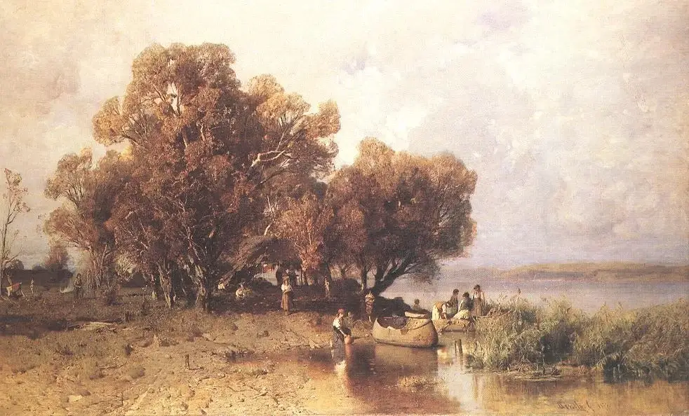

Mészöly Géza
Home
History
Paintings
Contact
Mészöly Géza Géza Introduction
Hungarian Painter
Born 18 May 1844 , Sárbogárd, Hungary
Death 12 November 1887, Jobbágyi, Nógrád County
Most known for his works of the Hungarian "ocean" Lake Balaton.
Paintings Ranging from 1,625 USD to 92,213 USD
